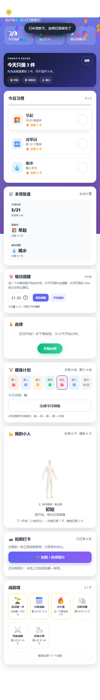
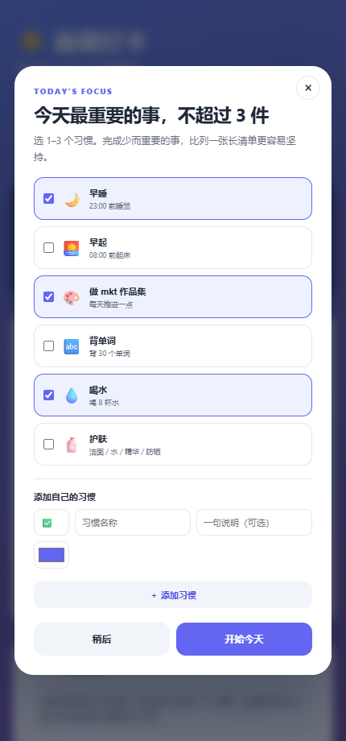

01 / FOCUS
只做 3 件
每天只选最重要的 1–3 个习惯。完成少而重要的事，比列一张长清单更容易坚持。
不用下载 App。打开网页，先选 1–3 个今日重点，完成、看见进步、每周复盘。没坚持住？每周还有一次补签。
网页版无需下载 · Android 测试版需允许“未知来源” · 数据只保存在本机

多数打卡工具让你记录一切，却没告诉你今天先做什么。Habit Loop 把注意力收回到最重要的 1–3 件。
每天只选最重要的 1–3 个习惯。完成少而重要的事，比列一张长清单更容易坚持。
本周完成率、最稳定习惯、最该调整习惯。用趋势替代“今天又没做好”的自责。
每周一次补签，保住连续记录。自律不是从不失败，而是中断后还能回来。
先用网页版最快。想要本地通知和更像 App 的体验，再下载 Android 测试版。两边数据不互通。
不用下载，浏览器直接使用。适合先试 1–3 天，看看这个方式适不适合你。
打开网页版 →支持本地通知，关闭 App 也能提醒。APK 约 10.6 MB，Android 6.0+。iOS 暂不支持。
下载 Android 版 ↓安装时 Android 可能提示“未知来源”，这是测试版分发方式。

不是 6 个，不是 10 个。今天只做最重要的。
打卡、连续天数、头像成长，让进步变得可见。
看最稳定和最该调整的习惯，下周只改一件事。
不用。点“打开网页版”就能用，Android 和 iPhone 浏览器都可以。
只存在当前浏览器本地。换浏览器或清理缓存前，先导出数据。
每周有一次补签机会，不用因为漏了一天就全部重来。
网页版不用安装；Android App 支持本地通知。两边数据保存在各自环境里，不互通。
打开网页版，或下载 Android 测试版。设置 3 个今日重点，7 天后回来看本周复盘。